Sort by Topic
- All
- Speech
- Story Generation
- Story Understanding
- Social Media
- Dungeons & Dragons
Jump to Year
2024
Stay tuned!
2023
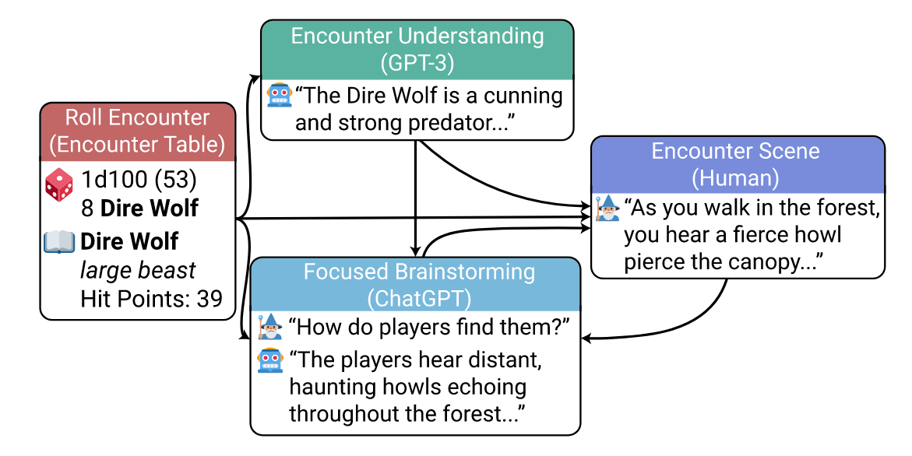
CALYPSO: LLMs as Dungeon Masters' Assistants
Andrew Zhu, Lara J. Martin, Andrew Head, Chris Callison-Burch. AAAI Conference on Artificial Intelligence and Interactive Digital Entertainment (AIIDE), Salt Lake City, UT. paper arXiv poster bibTexBibTex copied!
@article{Zhu2023CALYPSO,
title={{CALYPSO: LLMs as Dungeon Masters' Assistants}},
author={Zhu, Andrew and Martin, Lara J. and Head, Andrew and Callison-Burch, Chris},
year={2023},
eprint={2308.07540},
archivePrefix={arXiv},
url={https://ojs.aaai.org/index.php/AIIDE/article/view/27534},
pages={380--390},
doi={10.1609/aiide.v19i1.27534},
volume={19},
number={1},
journal={Proceedings of the AAAI Conference on Artificial Intelligence and Interactive Digital Entertainment (AIIDE)},
month={10},
address={Salt Lake City, UT},
publisher={AAAI}
}
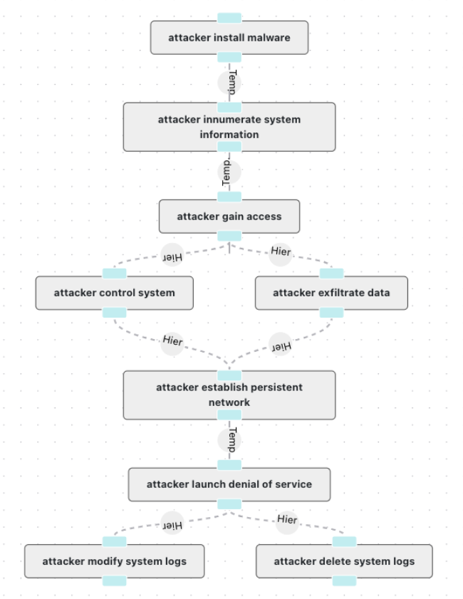
Human-in-the-Loop Schema Induction
Tianyi Zhang, Isaac Tham, Zhaoyi Hou, Jiaxuan Ren, Liyang Zhou, Hainiu Xu, Li Zhang, Lara J. Martin, Rotem Dror, Sha Li, Heng Ji, Martha Palmer, Susan Brown, Reece Suchocki, Chris Callison-Burch. ACL Demonstrations, Toronto, Canada. paper arXiv website bibTexBibTex copied!
@inproceedings{Zhang2023Schema,
title={{Human-in-the-Loop Schema Induction}},
author={Zhang, Tianyi and Tham, Isaac and Hou, Zhaoyi and Ren, Jiaxuan and Zhou, Liyang and Xu, Hianiu and Zhang, Li and Martin, Lara J. and Dror, Rotem and Li, Sha and Ji, Heng and Palmer, Martha and Brown, Susan and Suchocki, Reece and Callison-Burch, Chris},
year={2023},
eprint={2302.13048},
archivePrefix={arXiv},
booktitle={Annual Meeting of the Association for Computational Linguistics (ACL): System Demonstrations},
month={7},
address={Toronto, Canada},
url={https://aclanthology.org/2023.acl-demo.1/},
pages={1--10},
publisher={ACL},
doi={10.18653/v1/2023.acl-demo.1}
}
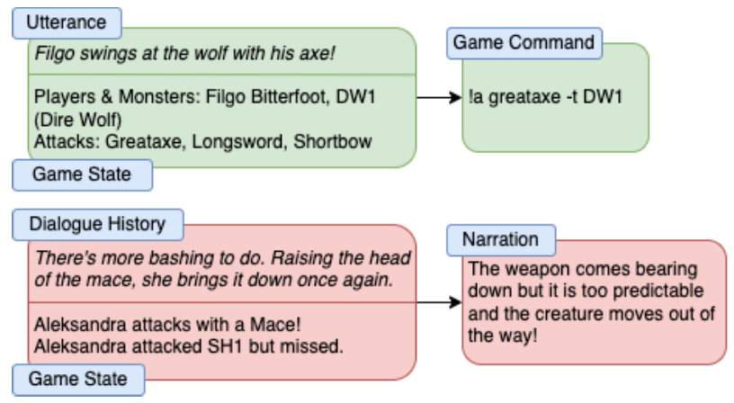
FIREBALL: A Dataset of Dungeons and Dragons Actual-Play with Structured Game State Information
Andrew Zhu, Karmanya Aggarwal, Alexander H. Feng, Lara J. Martin, Chris Callison-Burch. Annual Meeting of the Association for Computational Linguistics (ACL), Toronto, Canada. paper arXiv poster data bibTexBibTex copied!
@inproceedings{Zhu2023FIREBALL,
title={{FIREBALL: A Dataset of Dungeons and Dragons Actual-Play with Structured Game State Information}},
author={Zhu, Andrew and Aggarwal, Karmanya and Feng, Alexander and Martin, Lara J. and Callison-Burch, Chris},
year={2023},
eprint={2305.01528},
archivePrefix={arXiv},
booktitle={Annual Meeting of the Association for Computational Linguistics (ACL)},
month={7},
url={https://aclanthology.org/2023.acl-long.229/},
address={Toronto, Canada},
pages={4171--4193},
publisher={ACL},
doi={10.18653/v1/2023.acl-long.229}
}
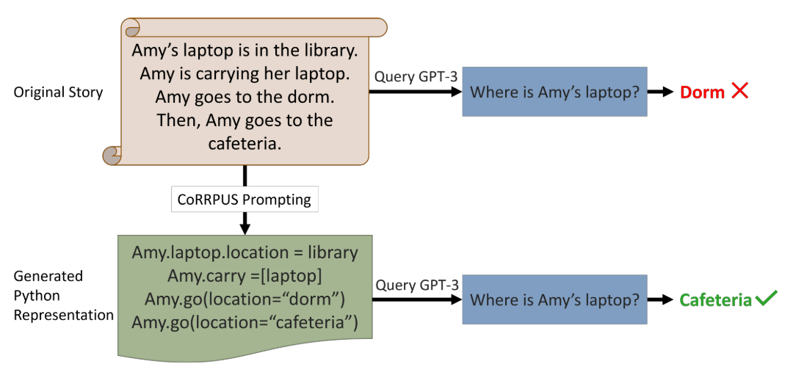
CoRRPUS: Code-based Structured Prompting for Neurosymbolic Story Understanding
Yijiang River Dong, Lara J. Martin, Chris Callison-Burch. Findings of ACL, Toronto, Canada. paper arXiv code bibTexBibTex copied!
@inproceedings{Dong2023CoRRPUS,
title={{CoRRPUS: Code-based Structured Prompting for Neurosymbolic Story Understanding}},
author={Dong, Yijiang River and Martin, Lara J. and Callison-Burch, Chris},
year={2023},
eprint={2212.10754},
archivePrefix={arXiv},
booktitle={Findings of the Association for Computational Linguistics: ACL 2023},
month={7},
address={Toronto, Canada},
url={https://aclanthology.org/2023.findings-acl.832/},
pages={13152--13168},
publisher={ACL},
doi={10.18653/v1/2023.findings-acl.832}
}
2022
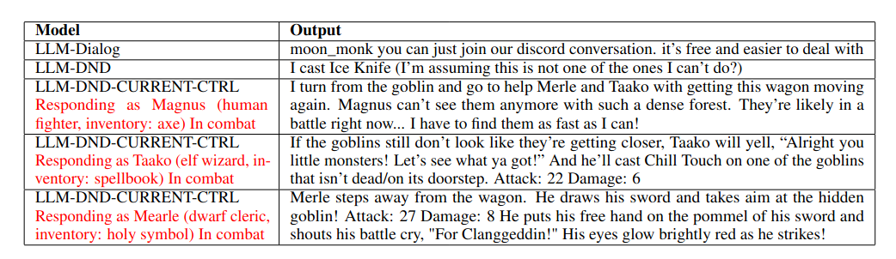
Dungeons and Dragons as a Dialogue Challenge for Artificial Intelligence
Chris Callison-Burch, Gaurav Singh Tomar, Lara J. Martin, Daphne Ippolito, Suma Bailis, David Reitter. Conference on Empirical Methods in Natural Language Processing (EMNLP), Abu Dhabi, UAE. paper local pdf arXiv poster data bibTexBibTex copied!
@inproceedings{ccb2022dungeons,
title={{Dungeons and Dragons as a Dialogue Challenge for Artificial Intelligence}},
author={Callison-Burch, Chris and Singh Tomar, Gaurav and Martin, Lara J. and Ippolito, Daphne and Bailis, Suma and Reitter, David},
booktitle={{Conference on Empirical Methods in Natural Language Processing (EMNLP)}},
year={2022},
pages={9379--9393},
eprint={2210.07109},
archivePrefix={arXiv},
address={Abu Dhabi, UAE},
publisher={ACL},
url={https://aclanthology.org/2022.emnlp-main.637},
month={12},
doi={10.18653/v1/2022.emnlp-main.637}
}
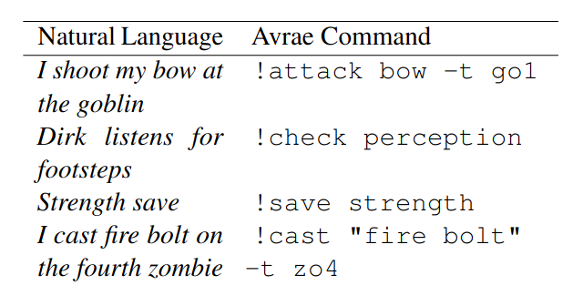
Using Language Models to Convert Between Natural Language and Game Commands
Stefan Papazov, Wesley Gill, Marta García Ferreiro, Andrew Zhu, Lara J. Martin, Chris Callison-Burch. NAACL 2022 Wordplay Workshop, Seattle, Washington. paper local pdf poster bibTexBibTex copied!
@inproceedings{papazov2022avrae,
title={{Using Language Models to Convert Between Natural Language and Game Commands}},
author={Papazov, Stefan and Gill, Wesley and García Ferreiro, Marta and Zhu, Andrew and Martin, Lara J. and Callison-Burch, Chris},
booktitle={{Wordplay: Where Language Meets Games Workshop at NAACL 2022}},
year={2022},
month={7},
address={Seattle, WA},
url={https://openreview.net/forum?id=jQSStHwtmDN}
}
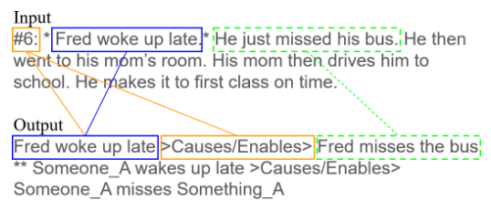
CIS²: A Simplified Commonsense Inference Evaluation for Story Prose
Bryan Li, Lara J. Martin, Chris Callison-Burch. ACL 2022 Workshop on Commonsense Representation and Reasoning (CSRR), Dublin, Ireland. paper local pdf arXiv poster code talk bibTexBibTex copied!
@inproceedings{li2022cis2,
title={{$CIS^2$: A Simplified Commonsense Inference Evaluation for Story Prose}},
author={Li, Bryan and Martin, Lara J. and Callison-Burch, Chris},
archivePrefix = {arXiv},
eprint = {2202.07880},
booktitle={{Workshop on Commonsense Representation and Reasoning (CSRR) at ACL 2022}},
year={2022},
month={5},
address={Dublin, Ireland},
url={https://openreview.net/forum?id=Se-xHMYg_bc}
}
2021
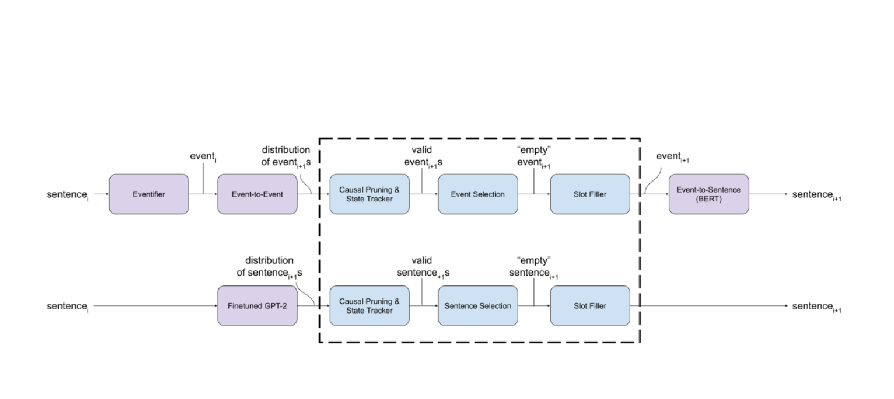
Neurosymbolic Automated Story Generation
Lara J. Martin. Thesis, Georgia Institute of Technology. paper local pdf bibTexBibTex copied!
@phdthesis{martin2021thesis,
title={{Neurosymbolic Automated Story Generation}},
school={Georgia Institute of Technology},
author={Martin, Lara J.},
year={2021},
month={4},
url={http://hdl.handle.net/1853/64643}
}
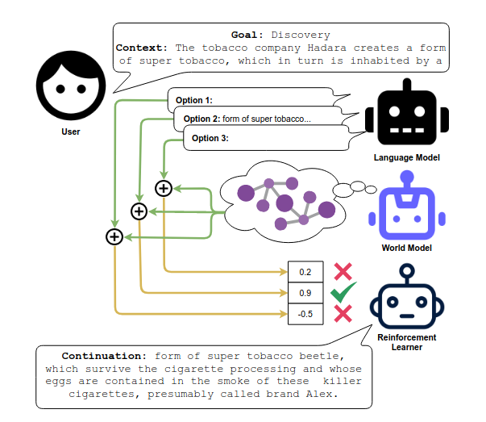
Preprint
Goal-Directed Story Generation: Augmenting Generative Language Models with Reinforcement Learning
Amal Alabdulkarim, Winston Li, Lara J. Martin, Mark O. Riedl. arXiv preprint arXiv:2112.08593. arXiv bibTexBibTex copied!
@report{alabdulkarim2021goal,
title={{Goal-Directed Story Generation: Augmenting Generative Language Models with Reinforcement Learning}},
author={Alabdulkarim, Amal and Li, Winston and Martin, Lara J. and Riedl, Mark O.},
year={2021},
archivePrefix={arXiv},
eprint={2112.08593},
url={https://arxiv.org/abs/2112.08593}
}
2020
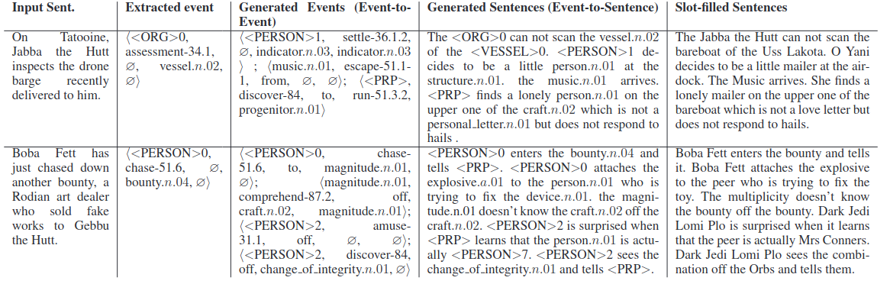
Story Realization: Expanding Plot Events into Sentences
Prithviraj Ammanabrolu, Ethan Tien, Wesley Cheung, Zhaochen Luo, William Ma, Lara J. Martin, Mark O. Riedl. AAAI Conference on Artificial Intelligence (AAAI), New York, NY. paper arXiv slides poster code data bibTexBibTex copied!
@article{ammanabrolu2020realization,
title={{Story Realization: Expanding Plot Events into Sentences}},
author={Ammanabrolu, Prithviraj and Tien, Ethan and Cheung, Wesley and Luo, Zhaochen and Ma, William and Martin, Lara J. and Riedl, Mark O.},
archivePrefix={arXiv},
eprint={1909.03480},
journal={{Proceedings of the AAAI Conference on Artificial Intelligence (AAAI)}},
volume={34},
number={05},
year={2020},
pages={7375--7382},
month={4},
doi={10.1609/aaai.v34i05.6232},
publisher={AAAI},
url={https://ojs.aaai.org//index.php/AAAI/article/view/6232},
address={New York, NY}
}
2019
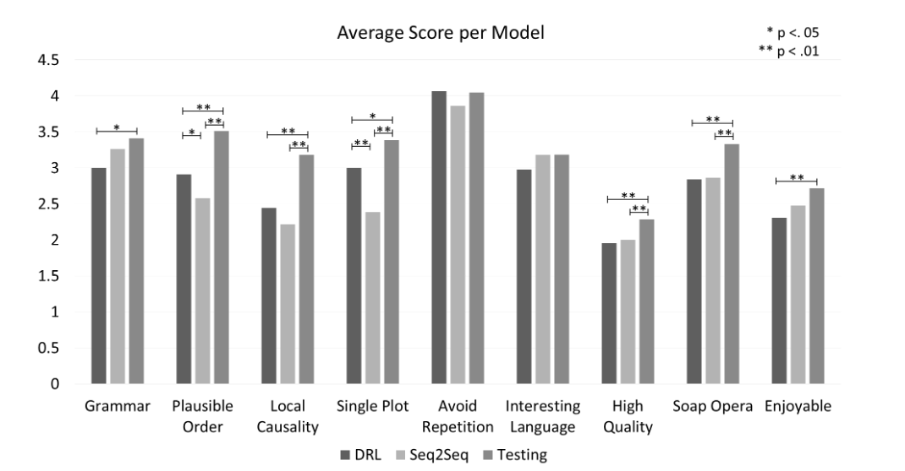
Controllable Neural Story Plot Generation via Reward Shaping
Pradyumna Tambwekar, Murtaza Dhuliawala, Lara J. Martin, Animesh Mehta, Brent Harrison, Mark O. Riedl. International Joint Conference on Artificial Intelligence (IJCAI), Macao, China. paper arXiv slides poster code bibTexBibTex copied!
@inproceedings{tambwekar2019controllable,
title={{Controllable Neural Story Plot Generation via Reward Shaping}},
author={Tambwekar, Pradyumna and Dhuliawala, Murtaza and Martin, Lara J. and Mehta, Animesh and Harrison, Brent and Riedl, Mark O.},
archivePrefix={arXiv},
eprint={1809.10736},
booktitle={{Proceedings of the Twenty-Eighth International Joint Conference on Artificial Intelligence, (IJCAI-19)}},
year={2019},
pages={5982--5988},
month={7},
doi={10.24963/ijcai.2019/829},
url={https://www.ijcai.org/proceedings/2019/829},
address={Macao, China}
}
Guided Neural Language Generation for Automated Storytelling
Prithviraj Ammanabrolu, Ethan Tien, Wesley Cheung, Zhaochen Luo, William Ma, Lara J. Martin, Mark O. Riedl. ACL 2019 Workshop of Storytelling (StoryNLP), Florence, Italy. paper slides bibTexBibTex copied!
@inproceedings{ammanabrolu2019guided,
title={{Guided Neural Language Generation for Automated Storytelling}},
author={Ammanabrolu, Prithviraj and Tien, Ethan and Cheung, Wesley and Luo, Zhaochen and Ma, William and Martin, Lara J. and Riedl, Mark O.},
booktitle={{Proceedings of the Second Workshop on Storytelling (StoryNLP) at ACL 2019}},
year={2019},
pages={46--55},
month={8},
doi={10.18653/v1/W19-3405},
publisher={ACL},
url={https://aclanthology.org/W19-3405/},
address={Florence, Italy}
}
2018
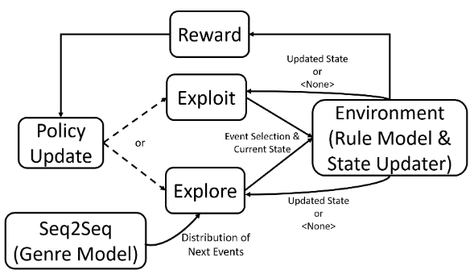
Dungeons and DQNs: Toward Reinforcement Learning Agents that Play Tabletop Roleplaying Games
Lara J. Martin, Srijan Sood, Mark O. Riedl. AAAI 2018 Workshop on Intelligent Narrative Technologies (INT), Edmonton, AB, Canada. paper local pdf slides bibTexBibTex copied!
@inproceedings{martin2018dungeons,
title={{Dungeons and DQNs: Toward Reinforcement Learning Agents that Play Tabletop Roleplaying Games}},
author={Martin, Lara J. and Sood, Srijan and Riedl, Mark},
booktitle={Proceedings of the Joint AIIDE Workshop on Intelligent Narrative Technologies and Workshop on Intelligent Cinematography and Editing (INT-WICED)},
year={2018},
month={11},
publisher={CEUR-WS},
url={https://ceur-ws.org/Vol-2321/paper4.pdf},
address={Edmonton, AB, Canada}
}
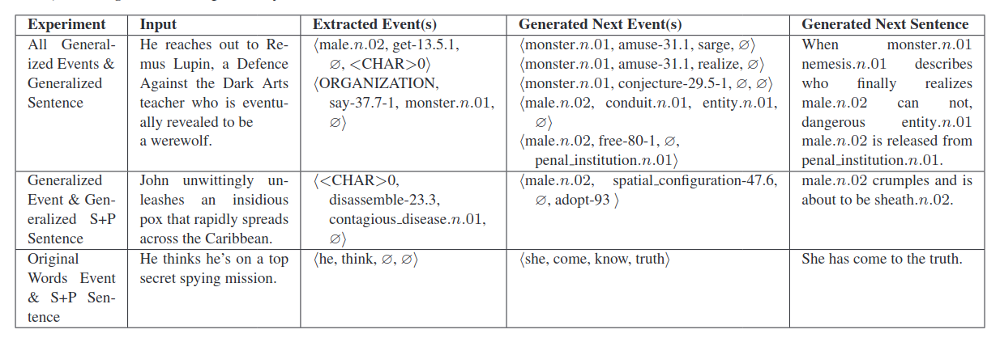
Event Representations for Automated Story Generation with Deep Neural Nets
Lara J. Martin, Prithviraj Ammanabrolu, Xinyu Wang, William Hancock, Shruti Singh, Brent Harrison, Mark O. Riedl. AAAI Conference on Artificial Intelligence (AAAI), New Orleans, LA. paper arXiv poster code data bibTexBibTex copied!
@article{martin2018event,
title={{Event Representations for Automated Story Generation with Deep Neural Nets}},
author={Martin, Lara J. and Ammanabrolu, Prithviraj and Wang, Xinyu and Hancock, William and Singh, Shruti and Harrison, Brent and Riedl, Mark O.},
journal={Proceedings of the AAAI Conference on Artificial Intelligence},
volume={32},
number={1},
month={2},
year={2018},
pages={868--875},
url={https://ojs.aaai.org/index.php/AAAI/article/view/11430},
address={New Orleans, LA},
doi={10.1609/aaai.v32i1.11430},
publisher={AAAI}
}
2017
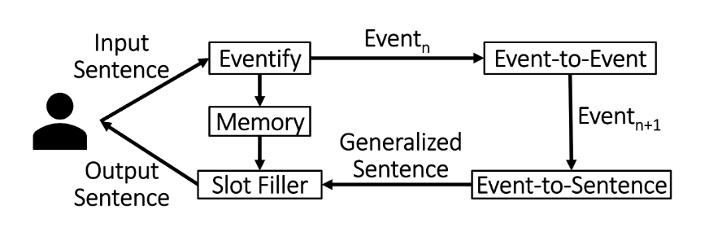
Improvisational Storytelling Agents
Lara J. Martin, Prithviraj Ammanabrolu, Xinyu Wang, Shruti Singh, Brent Harrison, Murtaza Dhuliawala, Pradyumna Tambwekar, Animesh Mehta, Richa Arora, Nathan Dass, Chris Purdy, Mark O. Riedl. NeurIPS 2017 Workshop on Machine Learning for Creativity and Design, Long Beach, CA. paper local pdf poster bibTexBibTex copied!
@inproceedings{martin2017improvisational,
title={{Improvisational Storytelling Agents}},
author={Martin, Lara J. and Ammanabrolu, Prithviraj and Wang, Xinyu and Singh, Shruti and Harrison, Brent and Dhuliawala, Murtaza and Tambwekar, Pradyumna and Mehta, Animesh and Arora, Richa and Dass, Nathan and Purdy, Chris and Riedl, Mark O.},
booktitle={Workshop on Machine Learning for Creativity and Design (NeurIPS 2017)},
pages={4},
year={2017},
url={https://nips2017creativity.github.io/doc/Improvisational_Agents.pdf},
address={Long Beach, CA}
}
2016
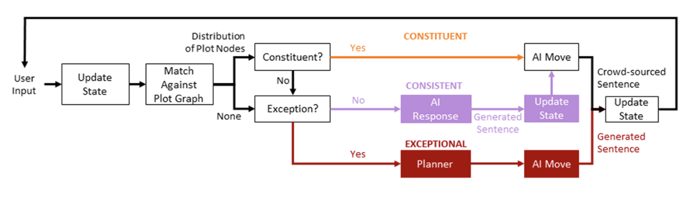
Improvisational Computational Storytelling in Open Worlds
Lara J. Martin, Brent Harrison, Mark O. Riedl. International Conference on Interactive Digital Storytelling (ICIDS), Los Angeles, CA. paper local pdf slides bibTexBibTex copied!
@inproceedings{martin2016improvisational,
title={{Improvisational Computational Storytelling in Open Worlds}},
author={Martin, Lara J. and Harrison, Brent and Riedl, Mark O.},
booktitle={International Conference on Interactive Digital Storytelling (ICIDS)},
pages={73--84},
year={2016},
month={10},
publisher={Springer},
url={https://link.springer.com/chapter/10.1007/978-3-319-48279-8_7},
address={Los Angeles, CA}
}
2015
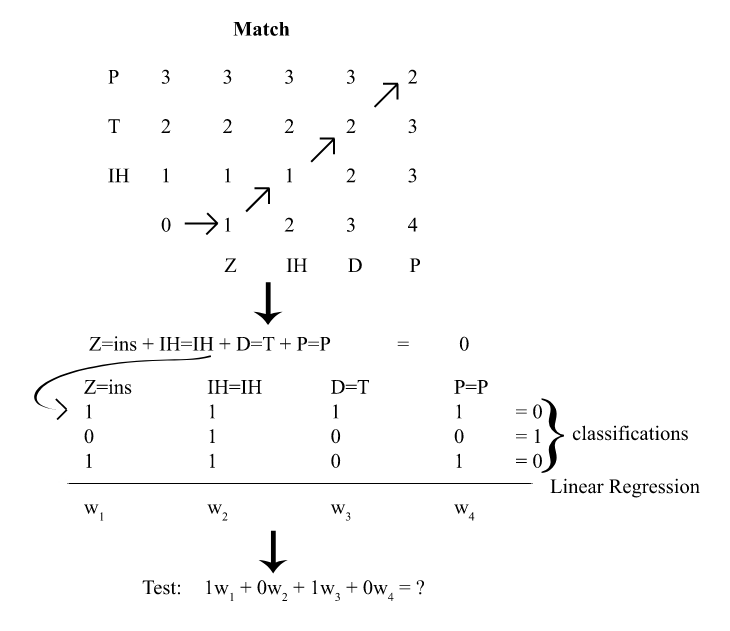
Utterance Classification in Speech-to-Speech Translation for Zero-Resource Languages in the Hospital Administration Domain
Lara J. Martin, Andrew Wilkinson, Sai Sumanth Miryala, Vivian Robison, Alan W Black. IEEE Automatic Speech Recognition and Understanding Workshop (ASRU), Scottsdale, AZ. paper local pdf poster bibTexBibTex copied!
@inproceedings{martin2015utterance,
title={{Utterance Classification in Speech-to-Speech Translation for Zero-Resource Languages in the Hospital Administration Domain}},
author={Martin, Lara J. and Wilkinson, Andrew and Miryala, Sai Sumanth and Robison, Vivian and Black, Alan W},
booktitle={2015 IEEE Workshop on Automatic Speech Recognition and Understanding (ASRU)},
pages={303--309},
month={12},
year={2015},
publisher={IEEE},
url={https://ieeexplore.ieee.org/document/7404809},
doi={10.1109/ASRU.2015.7404809},
address={Scottsdale, AZ}
}
2014
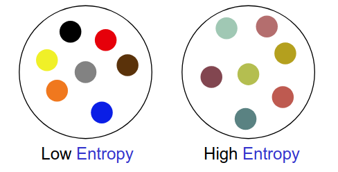
A Methodology for Using Crowdsourced Data to Measure Uncertainty in Natural Speech
Lara J. Martin, Matthew Stone, Florian Metze, Jack Mostow. IEEE Spoken Language Technology Workshop (SLT), South Lake Tahoe, NV. paper local pdf poster bibTexBibTex copied!
@inproceedings{martin2014methodology,
title={{A Methodology for Using Crowdsourced Data to Measure Uncertainty in Natural Speech}},
author={Martin, Lara and Stone, Matthew and Metze, Florian and Mostow, Jack},
booktitle={2014 IEEE Spoken Language Technology Workshop (SLT)},
pages={95--99},
month={12},
year={2014},
publisher={IEEE},
doi={10.1109/SLT.2014.7078556},
url={https://ieeexplore.ieee.org/document/7078556},
address={South Lake Tahoe, NV}
}
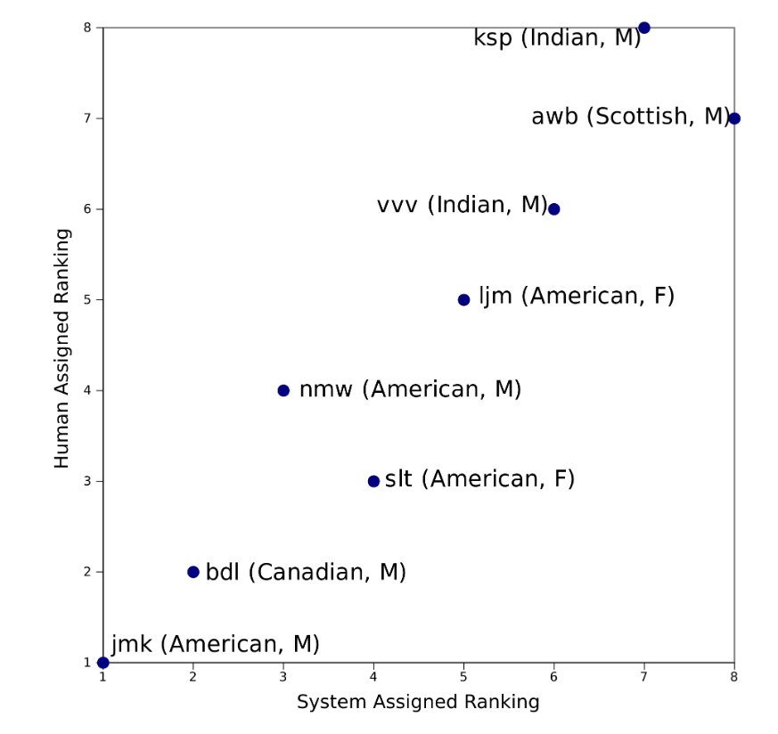
Applause: A Learning Tool for Low-Resource Languages
Nikolas Wolfe, Vinay Vyas Vemuri, Lara J. Martin, Florian Metze, Alan W Black. CHI 2014 Workshop on Designing Speech and Language Interactions, Toronto, Canada. paper local pdf bibTexBibTex copied!
@inproceedings{wolfeapplause,
title={{Applause: A Learning Tool for Low-Resource Languages}},
author={Wolfe, Nikolas and Vemuri, Vinay Vyas and Martin, Lara J. and Metze, Florian and Black, Alan W},
booktitle={Designing Speech and Language Interactions Workshop (CHI 2014)},
address={Toronto, Canada},
year={2014}
}